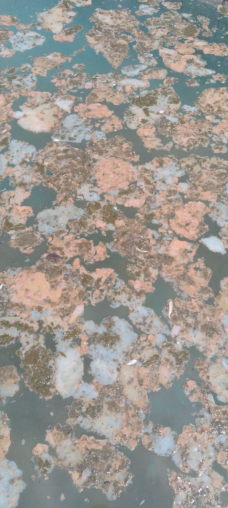
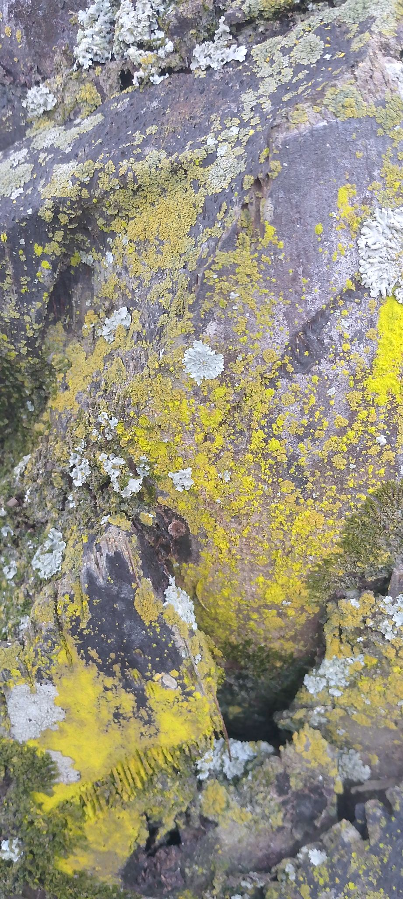
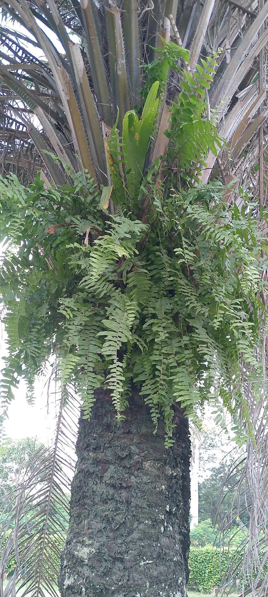
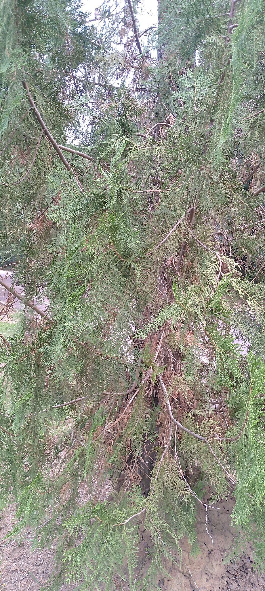
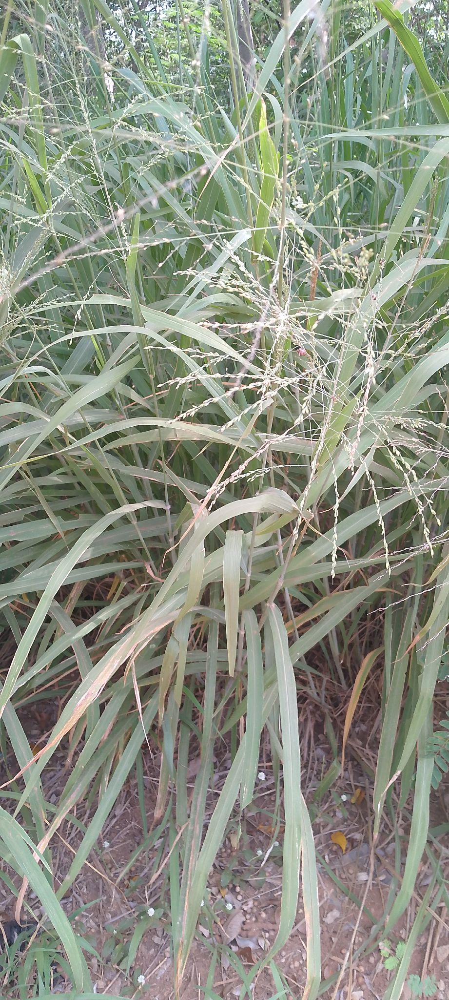
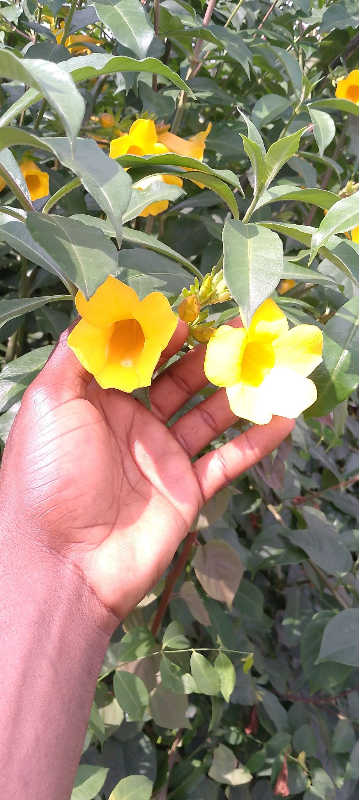
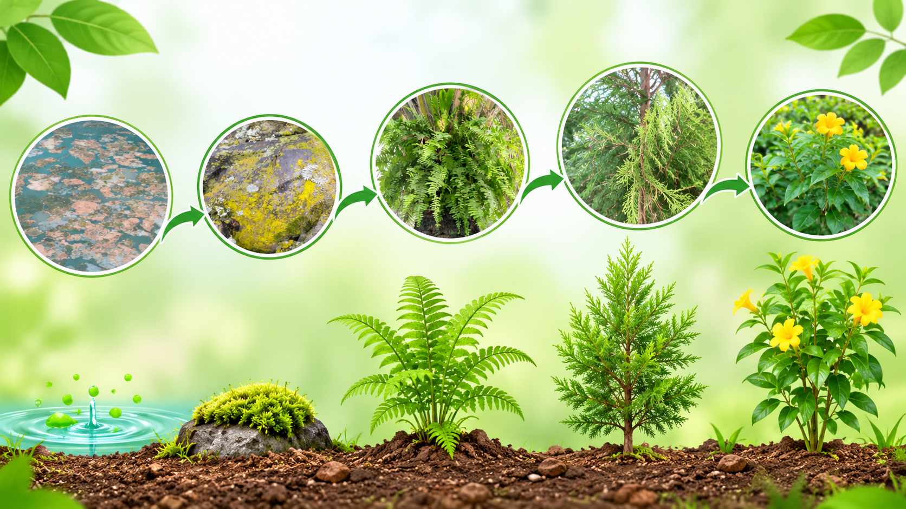

De l’eau à la terre, des premières algues aux plantes à fleurs, découvrez un parcours évolutif extraordinaire.
Parcourez les grandes innovations qui ont marqué l’évolution des végétaux. Sélectionnez un groupe pour découvrir ses caractéristiques.







Les végétaux ont progressivement colonisé des milieux très variés. Leur histoire est marquée par des innovations majeures : protection contre la dessiccation, tissus conducteurs, graines, pollen, fleurs et fruits.
La conversion de l’énergie lumineuse en énergie chimique soutient de nombreux écosystèmes.
Des adaptations permettent aux végétaux de vivre hors de l’eau, malgré les contraintes du milieu.
De nouvelles stratégies de reproduction favorisent la dispersion et la diversité des plantes.